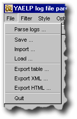
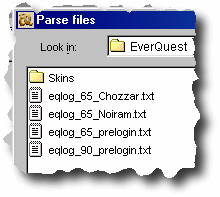
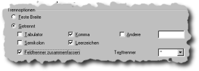

java -version
from a command line. If it does not report an error and the version printed
is 1.3.x or above, you should be fine and won't need to download it.yaelp-X.XX.zip
archive to an empty directory of your choice. There is no installer and no
configuration to be done other than unpacking it. Just remember where you
put it.yaelp-X.XX.jar file. This is an executable jar file which contains the main program code.java -jar yaelp-X.XX.jar to start the program. You may have to provide the full path to the java executable if it is not in your current execution path. This is where you will almost always start working. If you have previouosly used YAELP and saved some of the results, you might want to Load ... these now. This will restore all entries which were visible in the character roster at the time they were saved. Loading a new roster will clear all current entries. You may be asked for confirmation if the program detects that unsaved changes exist.
The current filter settings remain active
when loading new data. Filter settings are not stored in the save file. So
if you don't see what you expected, have a look at the status line at the
bottom of the window. If there are many characters hidden just clear the
filter settings.
Now you may want Parse logs ...
to update the roster with new information from the latest log files. YAELP
can parse the plain text log files (eqlog_*.txt) as well as gzip compressed
log files (eqlog_*.txt.gz). Information in the roster is updated according to the timestamp mechanism. This allows you to parse a bunch of intermixed log files which may be in any order.
Since the time recorded in the log files is the local time according to your time zone, you should not parse log files you got from a different time zone. Dont exchange raw log files, better exchange the saved roster information.
To keep things accurate, make sure your system clock is set correctly.
This can be automatically done using a network time client like NetTime. Note that you may have to watch out that this does not constantly open your dialup connection. See the support forum for NetTime if it causes you trouble.

The file chooser for parsing tries to find your Everquest® install directory when opened the fist time. Since the average Everquest® directory
contains well over a thousand files, the file filter is initialized such
that only log files should be visible. If you renamed your log files so that
they don't show up here, change the Files of type: setting to All Files in the file chooser.
Scanning this directory takes some time since it contains so many files.
Don't panic if no files show up for the first few seconds. Specifically with
Java versions 1.4 there is no visual indication that it is still busy searching
files; it is working in the background.
Save ... saves the currently visible portion of the roster into a YAELP format save file. Note that this means that all characters excluded from the table are not included in the information saved. So be sure to disable all filters if you want to save all information loaded.
| Name | Culture | Class | Level | Time |
| Testator | Testling | Tester | 6 | 2002-07-13 |
.yxr
by default. YXR is an abbreviation for YAELP XML Roster. And that is exactly
what it is: an XML representation of the roster information, GZIP compressed. If you have the gzip program, you can look at it using gzip -dc myroster.yxr for instance.This example contains information for only one character named Testator. For each successive character, the<roster title="Roster">
<heading>
<column id="name">Name</column>
<column id="culture">Culture</column>
<column id="class">Class</column>
<column id="level">Level</column>
<column id="guild">Guild</column>
<column id="zone">Zone</column>
<column id="time">Time</column>
</heading>
<avatar time="1026571151670">
<name>Testator</name>
<culture>Testling</culture>
<class>Tester</class>
<level>6</level>
<guild time="1026571218560">The Testing Testers</guild>
<zone>void</zone>
<time>2002-07-13</time>
<property name="Rank" value="a regular member" time="1026571243120"/>
</avatar>
</roster>
avatar section will repeated. Most tags in the avatar section should be self-explanatory. The time
attributes store the timestamp of the last change in milliseconds since midnight,
January 1, 1970 UTC. There are three things which get a timestamp: the avatar
section as a whole, the guild and each property. These are explained in detail
in the timestamps and roster updating section. The extra <time> tag is redundant and only retained for HTML formatting. It contains the avatar time truncated to a date, in ISO format.<heading> section is currently only used in styles
for HTML output and ignored when loading the file. The column id attributes
map to the avatar sub-tags, assigning a table header name to each tag. They
are listed in column order, as well as the tags in the avatar sections. Predefined
XSL styles make use of that fact so that the transformation becomes much
simpler and faster. This is the same example as in the save file format section. However, since only information from the table is exported, all timestamp and property information is lost."Name", "Culture", "Class", "Level", "Guild", "Zone", "Time"
"Testator", "Testling", "Tester", "6", "The Testing Testers", "void", "2002-07-13"
EverQuest is a registered trademark of Sony Computer Entertainment America Inc. ©
2002 Sony Online Entertainment Inc.